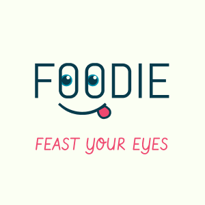

UX / UI Design
 x
live preview
× for: interaction design tools
× tools: figma
A food tracking app built for mobile.
Foodie was built with the food consumer in all of us in mind: as a user, what are some tools
I can use to turn the frustrations of not remembering my last meal at a place, into excitement
and joy to explore local cuisine? This user-friendly application targets 3 main areas of
tension when it comes to searching for a meaningful place to eat.
My vision for this app is to be a bright, eye-catching tool that makes the usually overlooked process
of picking dinner fun and hassle-free. Utilizing 3d modeled mascots, fluid animations, and
overlayed photos, I turned even the most mundane of activities into something sensory and enjoyable.
This app was designed in Figma and will be released as a fully functional app at a future date.